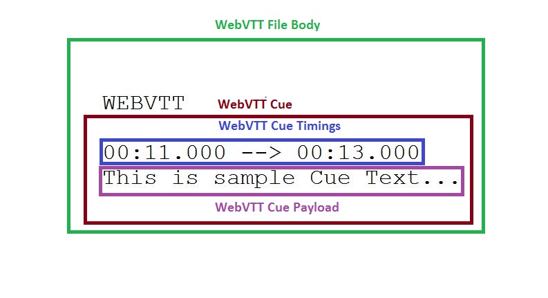

IntroductionWebVTT Developers at Seneca College
What is WebVTT?Its' Purpose? Need?
- What:
- WebVTT: Web Video Text Tracks
- Format Intended for marking up Text-Track Resources
- Need:
- Web Standard for Captions and Subtitles
- Simplicity: Author a WebVTT file and Link using HTML5 track
- Video Content Navigation: Chapter Markers
- Audio Text Descriptions for Visually Impaired Individuals
- Subtitles can be Formatted
- International Language Support using UTF-8
WebVTT in Action: Demo
Under The Hood: WebVTT File
3 Webvtt files embedded here: (as images?)
WebVTT File in Action!
1
00:00:01.000 --> 00:00:02.800
What is it like to be Brazilian?
Stylin' WebVTT Cue-Text: CSS
1
00:11.000 --> 00:13.000
This text is <b>Bold</b> & <i>Italic</i>

DOM API: JavaScript & HTML5 track element
Information from the Track Element can be used on Client-Side:
- TrackElement: allows authors to specify explicit external timed text tracks for media elements
- TextTrack:
- TextTrackCue: is the unit of time-sensitive data in a text track
Implementing the StandardProcess of Development
- General:
- Starting with Toy Parser and building on top of it
- Gecko Work In Progress Patch: 1 Year Out of Date
- Parallel Development (Parser, Build, Media Element, Track/DOM Bindings)
- Cross-Platform Development (Linux, Max OS, Windows)
- Specification:
- WebKit "bakes" the Parser on the Web Browser
- The Need for a Stand-alone C Library
- The Use of Callback Functions
- Potential to be used as a Validator and Parser
Open-Source DevelopmentThe challenges of being a student
- A Unique Course & Experience (IRC, bugzilla, MXR, self-learning,)
- Implementing and Understanding the WebVTT Specification
- Code Reviews and Working with Mozilla Devs (r+)
- Unit Testing (GoogleTest, MochiTests, nodeffi, ctypes, TravisCI, ValGrind)
- Using Git and GitHub
WebVTT in the Future
- Firefox Implementation:
- Used as a stand-alone library
- Integrated to Firefox build
- Documentated library to facilitate usability
- Technology:
- Native support to subtitles
- Assistive technology to hearing-impaired users
- Live web transmissions
- More creative web environment
Concluding Statements on WebVTT
- Implemented on most Web Browsers as a Web Standard
- Provides Simplicity in adding Subtitles & Captions
- Integrates into the Web Platform: (HTML5, CSS, JavaScript)
- Supports Video Content Navigation by Cue ID
- Supports Intenational Languages and UTF-8
Special Thanks
A very special thanks to:
- Ralph Gilles
- Chris Pearce
- Mozilla Community
- David Humphrey
Names of Contributers:
- Contributor A
- Contributor B
- Contributor C
- Contributor D
- Contributor E
- Contributor F
- Contributor G